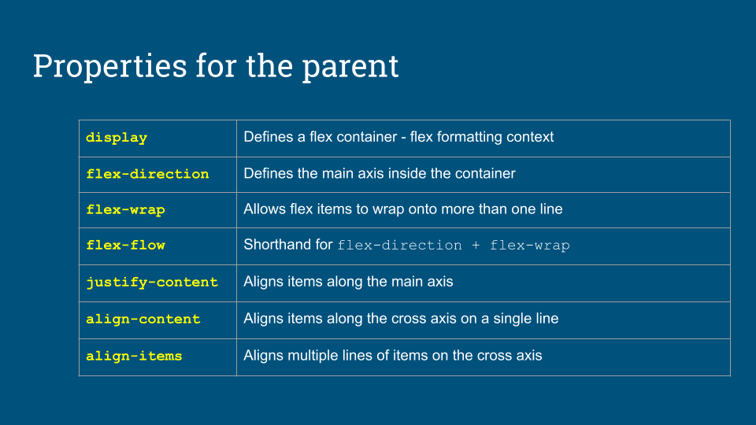
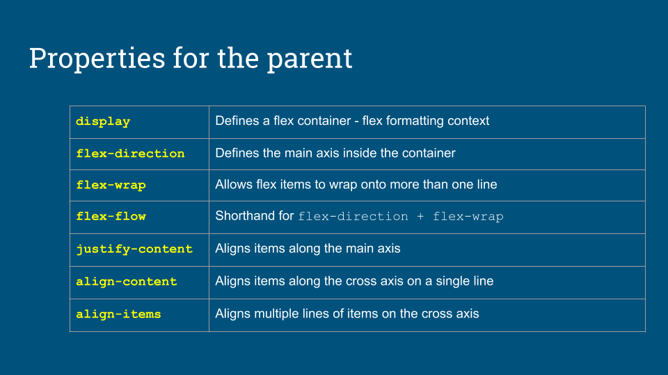

The first item has flex: 1 1 20em (shorthand for flex-grow: 1, flex-shrink: 1, flex-basis: 20em)
The second item has flex: 2 2 20em (shorthand for flex-grow: 2, flex-shrink: 2, flex-basis: 20em)
Both flex items want to be 20em wide. Because of the flex-grow (first parameter), if the flex container is
larger than 40em, the 2nd child will take twice as much leftover space as the first child. But if the parent
element is less than 40em wide, then the 2nd child will have twice as much shaved off of it as the 1st child,
making it look smaller (because of the 2nd parameter, flex-shrink).
 
